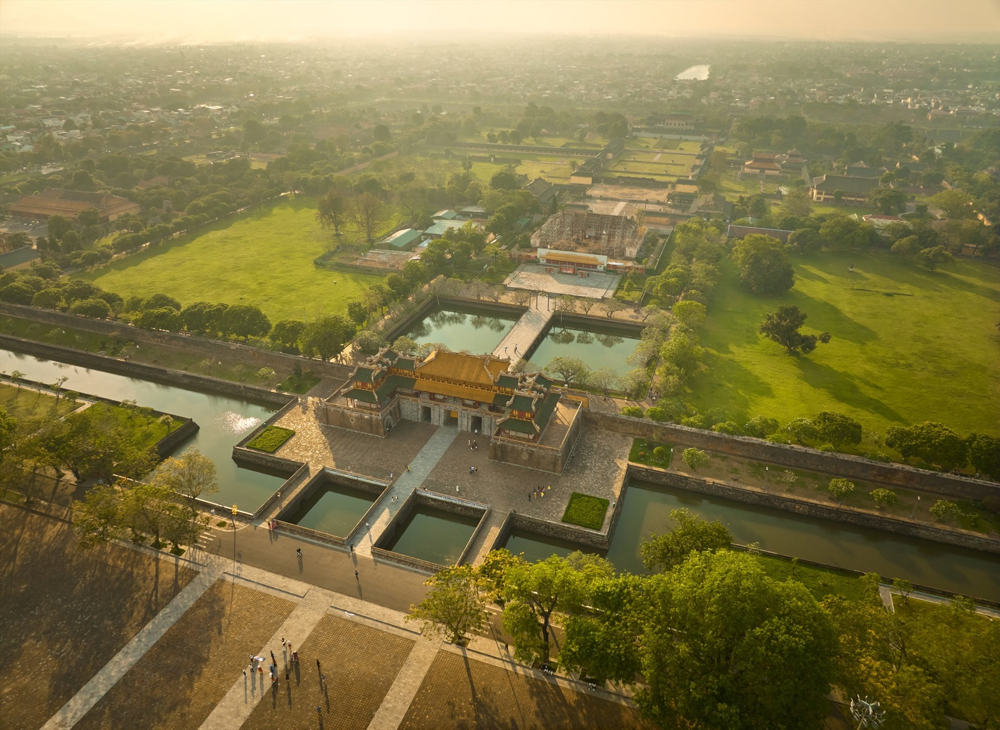

Nét đẹp kiến trúc cung đình Việt Nam
Hoàng thành có mặt bằng hình chữ nhật:
Vòng thành xây bằng gạch, cao 4,16m, dày 1,04m, móng sâu 0,66m. Mũ thành xây theo dạng hình thang cân.
Mỗi mặt thành có một cổng:
Giữa mỗi mặt thành có một pháo đài nhô ra ngoài để tăng khả năng phòng thủ. Bên trong mỗi góc thành có hệ thống bậc cấp để lính quan sát an ninh.
Bao quanh thành là hào nước gọi là hồ Ngoại Kim Thủy, rộng 16m, sâu 4m. Hai bờ hào được kè đá và có lan can bảo vệ. Giữa thành và hào có khoảng đất phòng lộ rộng 13m nhằm tăng cường phòng thủ. Có 10 cây cầu nối liền bên trong và bên ngoài thành.
Bên trong Hoàng thành và Tử Cấm thành từng có khoảng 100 công trình kiến trúc như cung điện, lầu gác, miếu thờ, hồ ao… Các công trình được bố trí đăng đối theo trục chính từ Ngọ Môn đến lầu Tứ Phương Vô Sự, tuân theo nguyên tắc truyền thống như “tả văn hữu võ”, “tả nam hữu nữ”.
Các con số 9 và 5 được sử dụng nhiều trong trang trí vì tượng trưng cho quyền lực của thiên tử. Hình tượng rồng 5 móng cũng là biểu tượng của vua.

Biểu tượng kiến trúc cung đình Việt Nam
📍 Địa chỉ: Kinh Thành Huế, Thừa Thiên Huế
📞 Điện thoại: 0768 021 428
📧 Email: baomeomeo@gmail.com
🌐 Website: https://hueworldheritage.org.vn
🕒 Giờ mở cửa: 7h00 - 17h30 (hàng ngày)